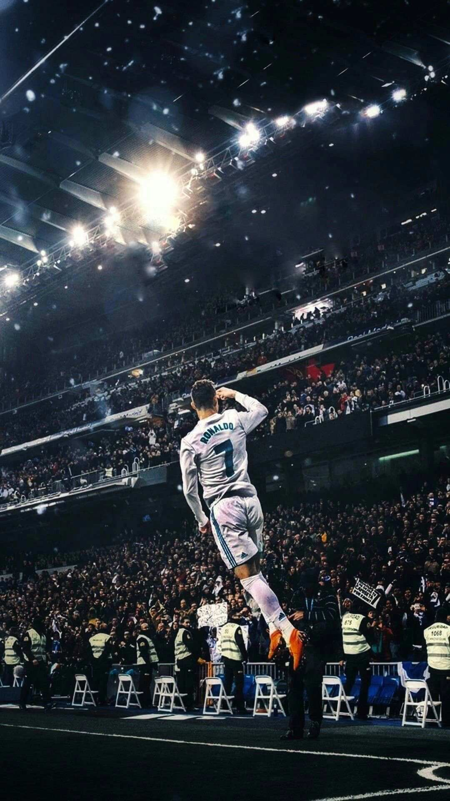
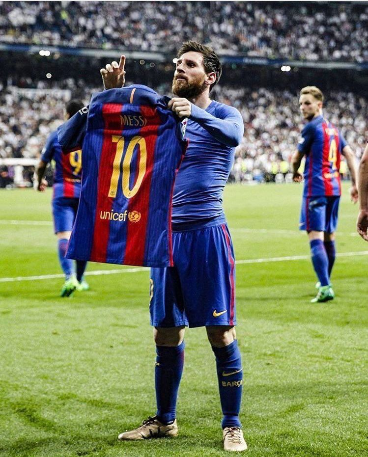
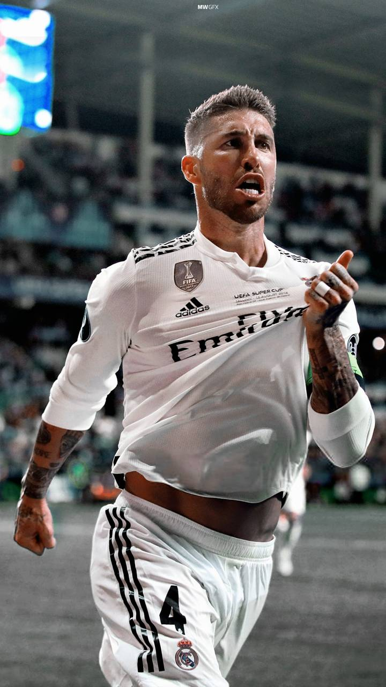

Weatherforcast for the next 24 hours: Plenty of Sunshine
Wind: 7km/h SSE; Ther: 21°C; Hum: 82%
Nagpur, - Sunday October 17, 2001 - 2pages
Transfer Window 2021/22
CRISTIANO TO MANCHESTER UNITED
Cristiano Ronaldo has returned to Manchester United 12 years after he left for Real Madrid following his departure from Juventus. United made a bid to bring the 36-year-old back to Old Trafford, where he starred between 2003 and 2009, for an initial £13 million (€15m/$18m) with add-ons of up to £7m (€8m/$9m). Cristiano Ronaldo's no. 7 shirt has become the biggest selling shirt ever in 24 hours, overtaking Messis's transfer to psg and Jebron James to La Lakers in basketball.. Collectively, Ronaldo has won 32 senior trophies in his career. He has also attained one title from youth and at least five titles from friendly competitions. All in all he had won over 300 trophies and medals by January 2021, with some of them dating back to his childhood.

LIONEL MESSI TO PSG
Lionel Messi has joined French club Paris Saint-Germain following his dramatic departure from Barcelona in one of the most explosive transfers in soccer history.The Argentine, who had been at the Spanish club since he was 13, will receive a €25 million euro ($30 million) signing-on fee and at least that amount every season, as reported by the Athletic. The New York Times reported that the deal is closer to $35 million per season.
Messi's move to Paris has materialized in the five days since it was announced that he would be leaving his childhood club.Messi has never played for another club having first signed with Barcelona as a teenager.
During his time in the Catalonia capital, Messi has won 10 league titles, seven Copas del Rey, and four UEFA Champions Leagues.
..

Sergio Ramos To PSG
Sergio Ramos has signed for Paris Saint-Germain on a two-year deal after leaving Real Madrid as a free agent. Ramos left Real Madrid upon the expiry of his contract in June after 16 years at the club, during which he won four Champions League crowns, five La Liga titles and four Club World Cups.Ramos has been named to the FIFPro World11 eleven times; a record for a defender, and the third-most all-time. He has also been elected to the UEFA Team of the Year nine times, also a record for a defender and the third-most of any player.Ramos currently holds the record as the most capped player in the history of the Spanish national team, and is his country's eighth-highest all-time goalscorer. He also holds the record of most international victories for Spain with 131 matches won.

This summer's transfer window was crazy :
While there were many world-class free transfers in the summer window, some players cost their new employers a fortune.
After also adding England winger Jadon Sancho for £73 million from Borussia Dortmund and French centre-back Raphael Varane from Real Madrid, United manager Ole Gunnar Solskjaer has little excuse if he fails to land a trophy this season.
Some high-profile arrivals included the likes of Andre Silva (€23 million), Angelino (€18 million) and Ilaix Moriba (€16 million).
The Blues were very ambitious in the transfer market. The London-based club had a successful campaign last term after winning the UEFA Champions League. One of the areas the outfit wanted to strengthen was the striker’s position. Therefore, they decided to bring Romelu Lukaku back from Inter Milan.
Manchester City have been amongst the highest-spending clubs for a decade. The reigning Premier League champions were rather quiet in the summer transfer window. However, they still managed to spend a whopping €127.5 million on arrivals at the club. For jack grealish.
Arsenal had a disappointing 2020-21 season, finishing at the eighth spot in the standings.
The Gunners have signed players like Ben White (€58.5 m), Martin Odegaard (€35 million), Aaron Ramsdale (€28.00 million), Takehiro Tomiyasu (€18.60 million), Albert Sambi Lokonga (€17.5 million) and Nuno Tavares (€8 million). You might feel for PSG goalkeeper Keylor Navas, who barely put a foot wrong this season and could find himself second choice again -- exactly what happened to him when Real Madrid signed Thibaut Courtois from Chelsea in 2018 -- but sources have told ESPN that the Costa Rica international may keep his place this season. Donnarumma may go back to the Serie A club on loan but the deal is still excellent with one eye on the future.
Sign a player for €40m, move him on for €70m a year later after he helps you to win the Scudetto. A good piece of transfer business for Inter but they'll regret the financial situation that means they have to let one of their stars go.
PSG have shown a willingness to spend big in certain positions and now they have a top quality right-back. The Morocco international is only 22 and has plenty of room to develop, but he's already world-class.